実用コイルの磁場解析
2022-9-2
吉田 清
kiyoshi.yoshida@eagle.ocn.ne.jp
1. はじめに
矩形断面の直線と円弧の組み合わせた任意形状の実用コイルの磁場解析の例を示す。矩形断面の導体の磁場解析方法は、別のウェブページ[1]に示す。
2. ソレノイド
矩形断面円形コイル（ソレノイド）の組み合わせで構成される実用コイルとしては、高磁場コイルとジャイロトロン用コイルを示す。コイルはZ軸に対称であるので、各コイル磁場を合算するだけで磁場を求めることができる.
2.1. 高磁場コイル
高磁場コイルを製作するのはソレノイドを組みあわせて、磁場に合わせた超伝導導体、Nb-Tiや Nb3Snを組み合わせる。Fig.2-1は13Tの磁界を発生したHF24[2]のコイルで、４個の巻線を組みあわせている。中心での磁界分布をFig. 2-2に示す。最高磁界は13.8Tであった。
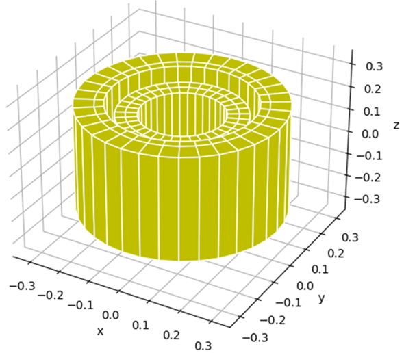
Fig. 2-1 Coaxial solenoid: HF24, four grading windings
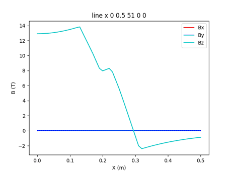
Fig. 2-2 Magnetic field along radial direction on HF24
2.2. ジャイロトロン
ジャイロトロンはサイクロトロン共鳴メーザー作用によるミリ波帯の大電力電磁波発振用電子管であり，核融合プラズマの電子サイクロトロン加熱として用いる。その発振領域(z=0.4m)が5T程度の磁場とガン領域(z=0m)の磁場勾配が定義されたコイル[3]である。コイルはFig. 2-3に示すように４個のコイルから構成されて、中心軸上の磁場分布はFig.2-4のようになった。
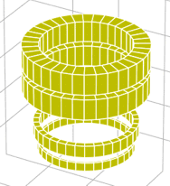
Fig.2-3 Gyrotron magnet for heating plasma
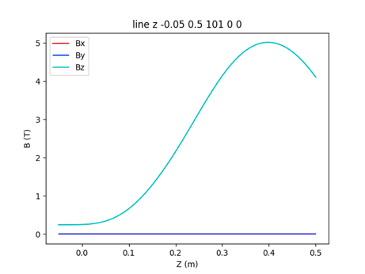
Fig. 2-4 Magnetic field along z-axis by Gyrotron
2.3. ポロイダル磁場コイル
トカマク装置の中で、ポロイダルコイルは円形コイルを組みあわせて構成される。ITERでは、６個の中心ソレノイドと、6個のポロイダル磁場コイルから構成され、外観をFig. 2-5に示す。
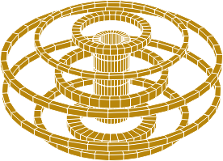
Fig. 2-5 ITER poloidal field coils
3. 非円形コイル
非円形コイルは、円弧と直線を組みあわせて構成される。磁場計算は、測定点と導体の位置から座標変換をして磁場を求めることができる。ここでは、レーストラックとトロイダルコイルの例を示す。
3.1. レーストラック
加速器の自由電子レーザーの発生のために、超伝導ウィグラ－が用いられる。ウィグラ－·コイルは非円形コイルで、２個の円弧と２個の直線から構成される。試作された超伝導ウィグラ－[4]は、高磁場の発生を確認しました。発生磁場は最大3.39Tで分布をFig.3-2に示す。超伝導コイルの最大磁界は、5.16Tであった。
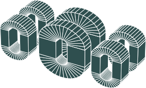
Fig. 3-1 Wiggler coils
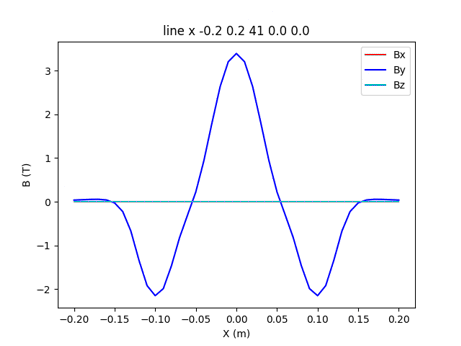
Fig. 3-2 Magnetic field along beam line of wiggler coils
3.2. トロイダル·コイル
トカマク型核融合実験装置であるITER[5]とJT-60SA[6]のトロイダル磁場コイルは、Fig.3-3に示すように、横断面がD型をした非円形コイルである。どちらのコイルも６個の円弧と１個の直線導体の組み合わせで構成される。ITERとJT-60SAのTFコイルはFig3-3に示すように大きさは２倍程度違うが、コイルの形状は相似である。
ITERで18個のTFコイルをトロイダル方法に配置したのが、Fig.3-4である。水平面での半径方向の磁場分布をFig.3.5にします。TFコイルの最大磁界は11.5Tである。さらにポロイダルコイルとプラズマを配置した状態での、水平面での半径方向の磁場分布をFig.3.6に、トロイダル（Y）方向の磁場Byは、Fig.3-5と変わらないが、BｘとBzは変化している。
JT-60SAのトロイダルコイルをFig.3-8に示す。水平面での半径方向の磁場分布をFig.3-9に示す。TFコイルの最大磁界が5.3Tである。
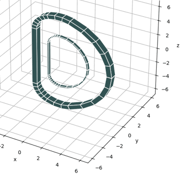
Fig. 3-3 Size of ITER and JT-60SA TF coil
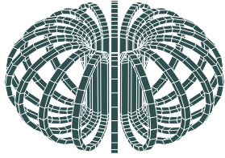
Fig. 3-4 ITER Toroidal Field Coils
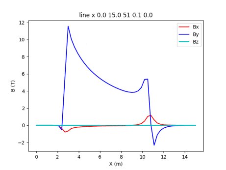
Fig. 3-5 Magnetic field along radial direction at mid plane of ITER TF coils
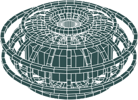
Fig. 3-6 ITER Toroidal Field Coils and Poloidal Field Coils

Fig. 3-7 Magnetic field along radial direction along the mid plane of ITER TF coils, PF coils and Plasma in case of the start of flat top
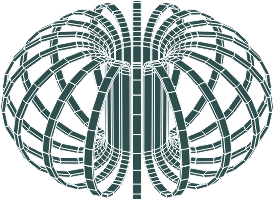
Fig. 3-8 JT-60SA Toroidal Field Coils
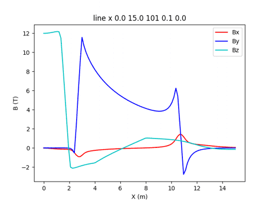
Fig. 3-9 Magnetic field along radial direction at mid plane of JT-60SATF coils
4. 線電流による磁場計算
ITER 18TF コイルの計算（Fig.3-5）の計算時間(Intel i7-6600U)は、1000点で144.3秒かかった。一方、Fig. 4-1に示す線電流に置き換えて計算すると、3.36秒で終了するので43倍高速に計算できる。しかし、計算誤差は、導体付近は大きくなる。半径方向の磁場の誤差をFig. 4-2 に示す。磁場の利用場所である半径R=4.2 - 8.2mの間では、計算誤差は0.1%程度と小さい。
３個の矩形断面コイルと15個の線電流コイルの組合わせを構成（Fig. 4-3）の磁場計算をした。その結果は、Fig. 4-2に示すように、誤差磁場は全領域で2%程度になり、重要な最高磁界や利用用域では0.1%以下であった。矩形断面と線電流の組合せ構成の計算時間は28.1秒で、矩形断面コイルの場合の5.1倍高速に計算できる。一方、Fortranで製作されたCOIL[8]は、1000点の計算に7.9秒かかるので、Pythonの19倍高速であった。
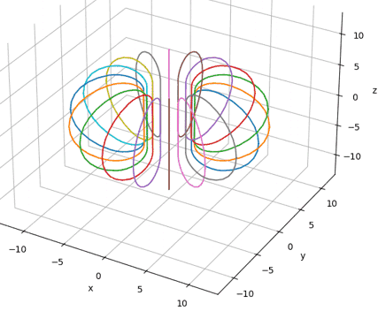
Fig. 4-1 ITER TF coils with 18 wire coils
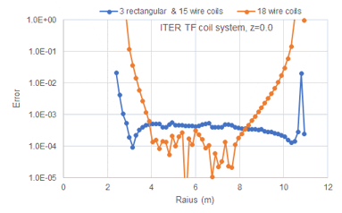
Fig. 4-2 Error of magnetic field among 18 rectangular coils, 3 rectangular coils & 15 wire coils, and 18 wire coils
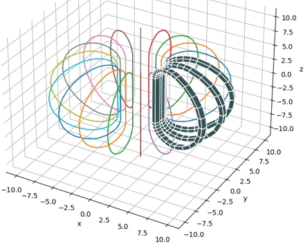
Fig. 4-3 ITER TF coils with 3 rectangular coils and 15 wire coils
6. まとめ
円形コイルと非円形コイルの組み合わせた磁場解析の例を示した。矩形断面の計算は、Pythonでは時間がかかるが、線電流を用いれば高速に求めることができる。両方法をうまく使うと、コイル設計は進む。
参考文献
- 吉田 清、「矩形断面の導体による磁場解析」
- M. Nishi, T. Ando, T. Isono, et al., “Development of 240 mm bore-13 T superconducting coil for large scale conductor testing”, IEEE Transaction on Magnetics 28-1(1992)597-600
- M. Konno, Y. Yasukawa, K. Sakaki, et al., “Superconducting Magnet System for High Power Gyrotron”, IEEE Transaction on Applied Superconductivity 3-1(1993)551-604
- 今野雅行, 「超電導ウィグラー・コイル製作」、JAERI-M 90-077 (1990).
- N. Mitchell, et al., “The ITER Magnet System”, IEEE Transaction on Applied Superconductivity 18-2(2008)435-440
- 吉田 清、「JT-60SA用超伝導マグネット」、低温工学 44-8 (2009) 346-352
- 吉田 清、「線電流による磁場解析」
- 吉田 清、礒野高明、杉本 誠、奥野 清：「空心コイル電磁計算プログラム：COIL」、JAERI-Data/Code 2003-014 (2003)